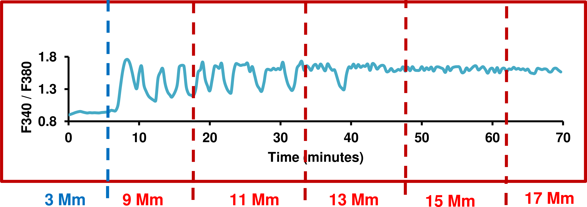
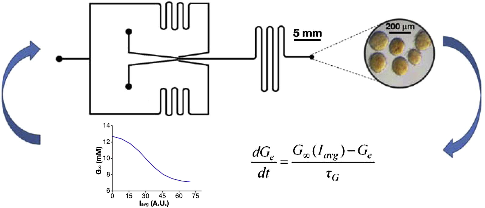

Glucose oscillations can activate an endogenous oscillator in pancreatic islets
SIAM Conference on the Life Sciences 2016
Joseph P. McKenna
Florida State University Biomathematics
Pancreatic islets of Langerhans
Jurgen Mayer, Centre for Genomic Regulation
Pulsatile insulin secretion
Wahren et al, Diabetes 2012
|
Hellman et al, Endocr 2009
|
Song et al, Endocr & Metab 2000
|
Porksen et al, Endocr & Metab 1997
|
Pulsatile insulin secretion

Matveyenko et al, Diabetes 2012
$\beta$-cell oscillations
|
|
Gilon et al, J Biol Chem 1993 |
Merrins et al, Biophys J 2016 |
Loss of Ca$^{2+}$ oscillations

Nikita Mukhitov, Florida State Univeristy Chemistry
Modeling
$\beta$-cell Dual Oscillator Model (Bertram et al, Biophys J 2004)
Glycolytic oscillator
\[\boxed{\begin{aligned}
{dG_i \over dt} & = J_{GLUT}(G_e)-J_{GK} \\
{dF6P \over dt} & = \alpha_1(J_{GK} - J_{PFK}) \\
{dFBP \over dt} & = \alpha_2(J_{PFK} - J_{PDH})
\end{aligned}}\]
Glycolytic oscillations

Glycolytic bifurcations
Glycolytic bifurcations
Activating glycolytic oscillations
Amplitude dependence
Period dependence
Recovering Ca$^{2+}$ oscillations
Experiments
The Roper Lab, Florida State University Chemistry
Amplitude dependence
McKenna et al, submitted
Period dependence
McKenna et al, submitted
Period dependence
McKenna et al, submitted
Data Summary
McKenna et al, submitted
Closed loop experiment

Dhumpa et al, Biophys J 2014
Closed loop experiment
McKenna et al, submitted